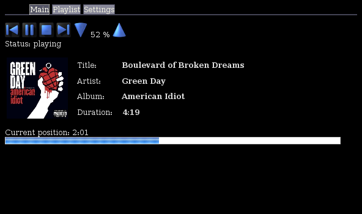

The new phone theme: Webarok displayed within a standard browser with the default theme: Webarok displayed within a webbrowser desktop plasmoid using the transparent theme: Webarok screen estate saving, tabbed netbook theme: 